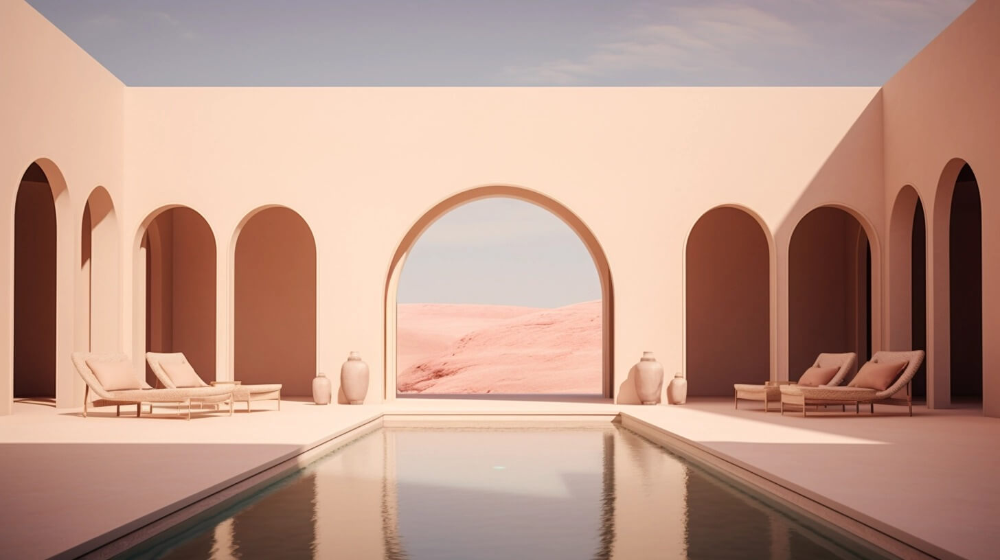

Fullscreen Page Transitions
Full-bleed pages slide over each other; the transition itself becomes the navigation.
Codrops, selected · 14 works · complete source in this repository
Fourteen transitions, scroll systems and cursor experiments from the Codrops archive — the mechanics behind the effect.
十四个转场、滚动系统与光标实验。不是效果展示，而是效果背后的机械结构。
 Preview from the source repository
Preview from the source repository
Full-bleed pages slide over each other; the transition itself becomes the navigation.
Phone, tablet and monitor shapes morph into each other as one continuous object.
A set of buttons that answer the cursor with fills, borders and small physics.
 024
Cover transition
Open demo ↗
024
Cover transition
Open demo ↗
A cover lifts, folds and reveals the next page: a title sequence for a website.
RGB channels split and scanlines tear as the image tilts in perspective.
Panels scroll at different speeds with clipped reveals and sticky captions.
Type enters line by line, word by word, driven by scroll position.
 028
Clip reveal
Open demo ↗
028
Clip reveal
Open demo ↗
A full-screen image is revealed through a moving clip path, like a curtain cut.
 029
Cursor
Open demo ↗
029
Cursor
Open demo ↗
A metaball cursor stretches, splits and merges around the pointer.
A grid of tiles flows open in a wave, each cell offset by a fraction of a second.
 031
Sticky sections
Open demo ↗
031
Sticky sections
Open demo ↗
Sections pin in place while their content scrolls past, then release.
A stack of cards rotates in depth on scroll, each layer sliding out of alignment.

033 Typographic image Open demo ↗An image grows out of a word and fills the line, then retreats.
 034
Carousel
Open demo ↗
034
Carousel
Open demo ↗
A circular carousel that turns as you scroll, cards facing the centre.